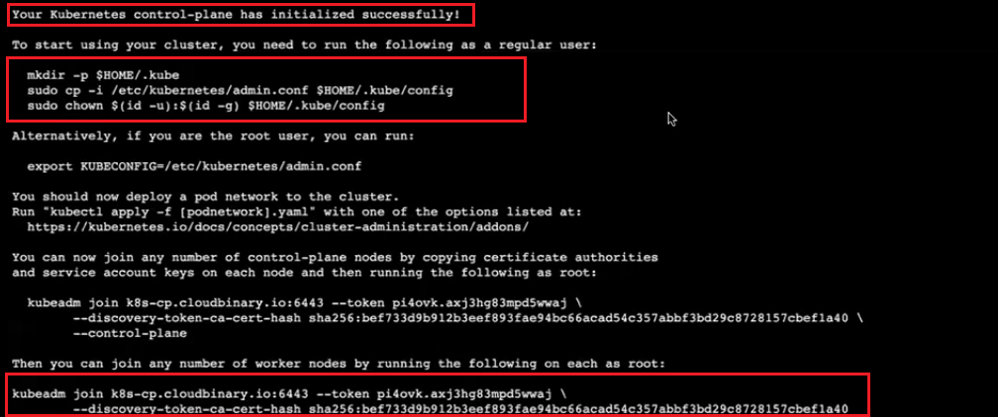
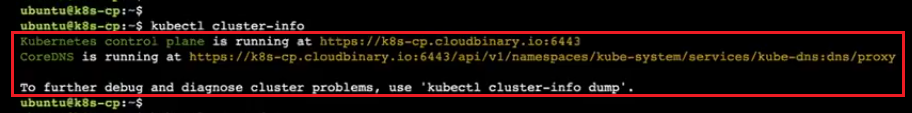
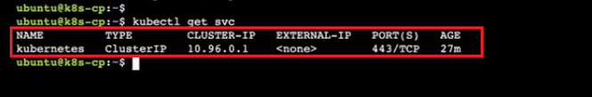
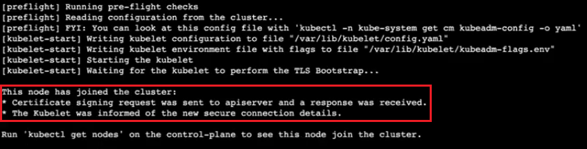
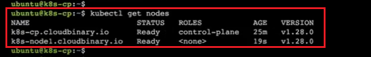
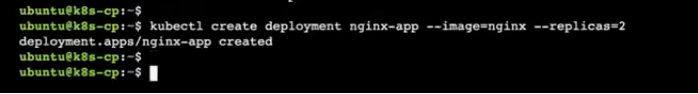
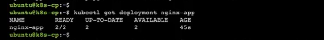
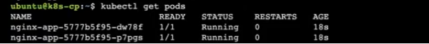
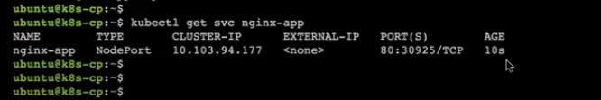
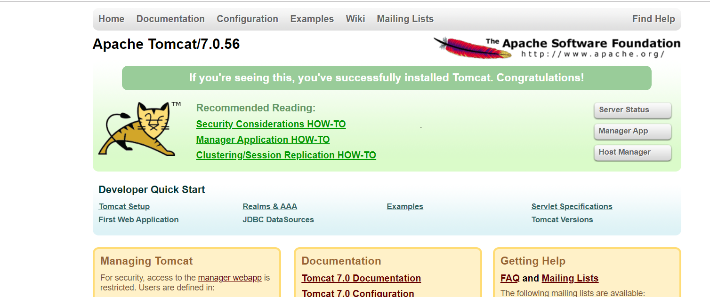

In this, we are going to cover How to Install Kubernetes Cluster on Ubuntu with kubeadm in cloud platforms like Amazon EC2 and Deploying Application to Kubernetes Cluster.
We will be building a k8s cluster with one control-plane(CP)/k8s-master node and a worker(W) node on Ubuntu.
First, we'll launch an EC2 instance in a chosen region using a specified subnet. Once the instance is launched, we'll establish a connection to it either via SSH or AWS Session Manager.
Setting the hostname makes it easier to identify the node within the Kubernetes cluster. Adding an entry to /etc/hosts ensures that the hostname resolves to the correct IP address.
hostnamectl set-hostname "k8s-node1.cloudbinary.io"
echo "`hostname -I | awk '{ print $1}'` `hostname`" >> /etc/hosts
Updating and installing necessary packages ensures that the system has the required dependencies for running Kubernetes and related tools.
sudo apt-get update
sudo apt-get install git curl unzip tree wget -y
Disabling swap is important because Kubernetes requires swap to be disabled on all nodes in the cluster.
sudo swapoff -a
sudo sed -i '/ swap / s/^\(.*\)$/#\1/g' /etc/fstab
Loading kernel modules ensures that necessary kernel modules are available for Kubernetes to function properly.
sudo tee /etc/modules-load.d/containerd.conf <<EOF
overlay
br_netfilter
EOF
# load kernel modules
sudo modprobe overlay
sudo modprobe br_netfilter
Setting kernel parameters configures the network and other settings required by Kubernetes.
sudo tee /etc/sysctl.d/kubernetes.conf <<EOF
net.bridge.bridge-nf-call-ip6tables = 1
net.bridge.bridge-nf-call-iptables = 1
net.ipv4.ip_forward = 1
EOF
# Reload the above changes
sudo sysctl --system
Installing containerd provides the container runtime needed by Kubernetes.
# Install containerd run time
sudo apt-get install -y curl gnupg2 software-properties-common apt-transport-https ca-certificates
# Enable docker repository
sudo curl -fsSL https://download.docker.com/linux/ubuntu/gpg | sudo gpg --dearmour -o /etc/apt/trusted.gpg.d/docker.gpg
sudo add-apt-repository "deb [arch=amd64] https://download.docker.com/linux/ubuntu $(lsb_release -cs) stable"
# apt command to install containerd
sudo apt-get update
sudo apt-get install -y containerd.io
Configuring containerd ensures that it uses systemd as cgroup, which is required by Kubernetes.
# Configure containerd so that it starts using systemd as cgroup.
sudo containerd config default | sudo tee /etc/containerd/config.toml >/dev/null 2>&1
sudo sed -i 's/SystemdCgroup \= false/SystemdCgroup \= true/g' /etc/containerd/config.toml
# Restart and enable containerd service
sudo systemctl restart containerd
sudo systemctl enable containerd
Adding the Kubernetes repository to apt sources allows installation of Kubernetes components using apt.
# Refer this page before Execution https://kubernetes.io/blog/2023/08/15/pkgs-k8s-io-introduction/
# Add apt repository for Kubernetes
echo "deb [signed-by=/etc/apt/keyrings/kubernetes-apt-keyring.gpg] https://pkgs.k8s.io/core:/stable:/v1.28/deb/ /" | sudo tee /etc/apt/sources.list.d/kubernetes.list
curl -fsSL https://pkgs.k8s.io/core:/stable:/v1.28/deb/Release.key | sudo gpg --dearmor -o /etc/apt/keyrings/kubernetes-apt-keyring.gpg
sudo apt-get update
Installing Kubernetes components (kubelet, kubeadm, kubectl) provides the necessary tools for managing the Kubernetes cluster.
# Install Kubernetes components
sudo apt-get install -y kubelet kubeadm kubectl
Holding Kubernetes packages prevents them from being upgraded automatically, ensuring stability of the cluster.
# Prevent automatic upgrades for stability
sudo apt-mark hold kubelet kubeadm kubectl
Checking the versions of kubelet, kubeadm, and kubectl ensures that the correct versions are in use for the Kubernetes cluster setup.
# Verify the version
kubelet --version
kubeadm version
kubectl version
First, we'll launch an EC2 instance in a chosen region using a specified subnet. Once the instance is launched, we'll establish a connection to it either via SSH or AWS Session Manager.
Setting the hostname makes it easier to identify the node within the Kubernetes cluster. Adding an entry to /etc/hosts ensures that the hostname resolves to the correct IP address.
hostnamectl set-hostname "k8s-node1.cloudbinary.io"
echo "`hostname -I | awk '{ print $1}'` `hostname`" >> /etc/hosts
Updating and installing necessary packages ensures that the system has the required dependencies for running Kubernetes and related tools.
sudo apt-get update
sudo apt-get install git curl unzip tree wget -y
Disabling swap is important because Kubernetes requires swap to be disabled on all nodes in the cluster.
sudo swapoff -a
sudo sed -i '/ swap / s/^\(.*\)$/#\1/g' /etc/fstab
Loading kernel modules ensures that necessary kernel modules are available for Kubernetes to function properly.
sudo tee /etc/modules-load.d/containerd.conf <<EOF
overlay
br_netfilter
EOF
# load kernel modules
sudo modprobe overlay
sudo modprobe br_netfilter
Setting kernel parameters configures the network and other settings required by Kubernetes.
sudo tee /etc/sysctl.d/kubernetes.conf <<EOF
net.bridge.bridge-nf-call-ip6tables = 1
net.bridge.bridge-nf-call-iptables = 1
net.ipv4.ip_forward = 1
EOF
# Reload the above changes
sudo sysctl --system
Installing containerd provides the container runtime needed by Kubernetes.
# Install containerd run time
sudo apt-get install -y curl gnupg2 software-properties-common apt-transport-https ca-certificates
# Enable docker repository
sudo curl -fsSL https://download.docker.com/linux/ubuntu/gpg | sudo gpg --dearmour -o /etc/apt/trusted.gpg.d/docker.gpg
sudo add-apt-repository "deb [arch=amd64] https://download.docker.com/linux/ubuntu $(lsb_release -cs) stable"
# apt command to install containerd
sudo apt-get update
sudo apt-get install -y containerd.io
Configuring containerd ensures that it uses systemd as cgroup, which is required by Kubernetes.
# Configure containerd so that it starts using systemd as cgroup.
sudo containerd config default | sudo tee /etc/containerd/config.toml >/dev/null 2>&1
sudo sed -i 's/SystemdCgroup \= false/SystemdCgroup \= true/g' /etc/containerd/config.toml
# Restart and enable containerd service
sudo systemctl restart containerd
sudo systemctl enable containerd
Adding the Kubernetes repository to apt sources allows installation of Kubernetes components using apt.
# Refer this page before Execution https://kubernetes.io/blog/2023/08/15/pkgs-k8s-io-introduction/
# Add apt repository for Kubernetes
echo "deb [signed-by=/etc/apt/keyrings/kubernetes-apt-keyring.gpg] https://pkgs.k8s.io/core:/stable:/v1.28/deb/ /" | sudo tee /etc/apt/sources.list.d/kubernetes.list
curl -fsSL https://pkgs.k8s.io/core:/stable:/v1.28/deb/Release.key | sudo gpg --dearmor -o /etc/apt/keyrings/kubernetes-apt-keyring.gpg
sudo apt-get update
Installing Kubernetes components (kubelet, kubeadm, kubectl) provides the necessary tools for managing the Kubernetes cluster.
# Install Kubernetes components
sudo apt-get install -y kubelet kubeadm kubectl
Holding Kubernetes packages prevents them from being upgraded automatically, ensuring stability of the cluster.
# Prevent automatic upgrades for stability
sudo apt-mark hold kubelet kubeadm kubectl
Checking the versions of kubelet, kubeadm, and kubectl ensures that the correct versions are in use for the Kubernetes cluster setup.
# Verify the version
kubelet --version
kubeadm version
kubectl version
Exporting Kubernetes configuration to system environment for administrative access.
export KUBECONFIG=/etc/kubernetes/admin.conf
# Initialize Kubernetes cluster with Kubeadm command
su - ubuntu
id
pwd
cd
sudo kubeadm init --control-plane-endpoint=k8s-cp.cloudbinary.io >> /home/ubuntu/k8s-cluster.output
Note : After Executing this command need to copy down the output for feature purpose.
At the end of the command output, you will see something like the following this will be important.

# Setting up kubeconfig
su - ubuntu
mkdir -p $HOME/.kube
sudo cp -i /etc/kubernetes/admin.conf $HOME/.kube/config
sudo chown $(id -u):$(id -g) $HOME/.kube/config
# Installing Calico network add-on
kubectl apply -f https://raw.githubusercontent.com/projectcalico/calico/v3.25.0/manifests/calico.yaml
To Check cluster and network is Ready.
# Check cluster-info
kubectl cluster-info

To check network.
# Check network
kubectl get svc

You should run this command on the worker node EC2 instance to join the cluster.
sudo kubeadm join 192.168.0.100:6443 --token abcdef.1234567890abcdef --discovery-token-ca-cert-hash sha256:0123456789abcdef0123456789abcdef0123456789abcdef0123456789abcdef

Switch back to the control-plane node and run the below command to verify.
# To See node Joined the Cluster.
kubectl get nodes

These steps collectively set up a Kubernetes cluster and Joined the nodes on the Ubuntu machine. Now it is ready for use in a production environment.
kubectl create deployment nginx-app --image=nginx --replicas=2
kubectl get deployment nginx-app
kubectl get pods
kubectl expose deployment nginx-app --type=NodePort --port=80
kubectl get svc nginx-app
http://<worker-node-ip-address>/<control-plane-ip-address>:<NodePort>
kubectl delete deployment nginx-app
kubectl delete svc nginx-app
File Name : tomcat-deployment.yml
apiVersion: apps/v1
kind: Deployment
metadata:
name: tomcat-deployment
spec:
selector:
matchLabels:
app: tomcat
replicas: 2 # tells deployment to run 2 pods matching the template
template:
metadata:
labels:
app: tomcat
spec:
containers:
- name: tomcat
image: nandeesh10/tomcat:1.0.0
ports:
- containerPort: 80
---
apiVersion: v1
kind: Service
metadata:
name: tomcat
namespace: default
labels:
app: tomcat
annotations:
service.beta.kubernetes.io/aws-load-balancer-type: "nlb"
spec:
externalTrafficPolicy: Local
ports:
- name: http
port: 80
protocol: TCP
targetPort: 80
selector:
app: tomcat
type: LoadBalancer
...
kubectl create service nodeport tomcat --tcp=80:80
kubectl apply -f tomcat-deployment.yml
kubectl get deployment tomcat-deployment
kubectl get rs
kubectl get pods
kubectl get svc
kubectl get nodes
http://<worker-node-ip-address>/<control-plane-ip-address>:<NodePort>

kubectl scale --current-replicas=2 --replicas=3 deployment/tomcat-app
kubectl get rs
kubectl get pods
"Application deployment in Kubernetes completed successfully and All resources are now provisioned and operational. You can now scale up the replicas as needed."